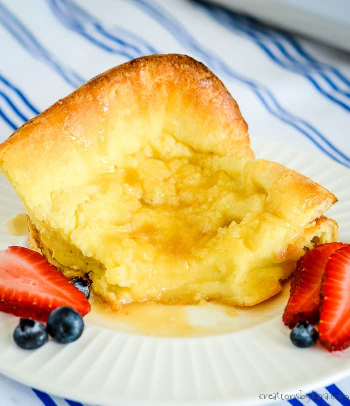

German Pancake Stacks (Cross Stacks) Recipe
A Towering Treat
German Pancake Stacks (Cross Stacks)

Ingredients
- 3 eggs
- 1/2 cup milk
- 1/2 cup all-purpose flour
- 1 tablespoon sugar
- 1/2 teaspoon vanilla extract
- Pinch of salt
- 2 tablespoons butter
- Powdered sugar, for serving
- Fresh berries, for serving
Instructions
- Preheat oven to 425°F (220°C). Place the butter in a large ovenproof skillet and melt in the oven.
- In a blender, combine the eggs, milk, flour, sugar, vanilla extract, and salt. Blend until smooth.
- Pour the batter into the preheated skillet, over the melted butter. Bake for 20-25 minutes or until the pancake is puffed and golden.
- Remove from oven, cut into stacks, and serve immediately topped with powdered sugar and fresh berries.